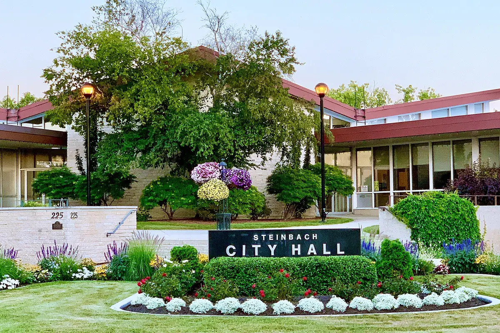

New · November 6, 2026
Advocating to council: what has worked, and what hasn't
Over eleven years and three councils, residents and groups brought 164 requests to council. Free asks almost always won; requests for money mostly vanished into closed budget meetings; and residents asking on their own rarely got what they wanted. Here is what worked, and how each council member responded.